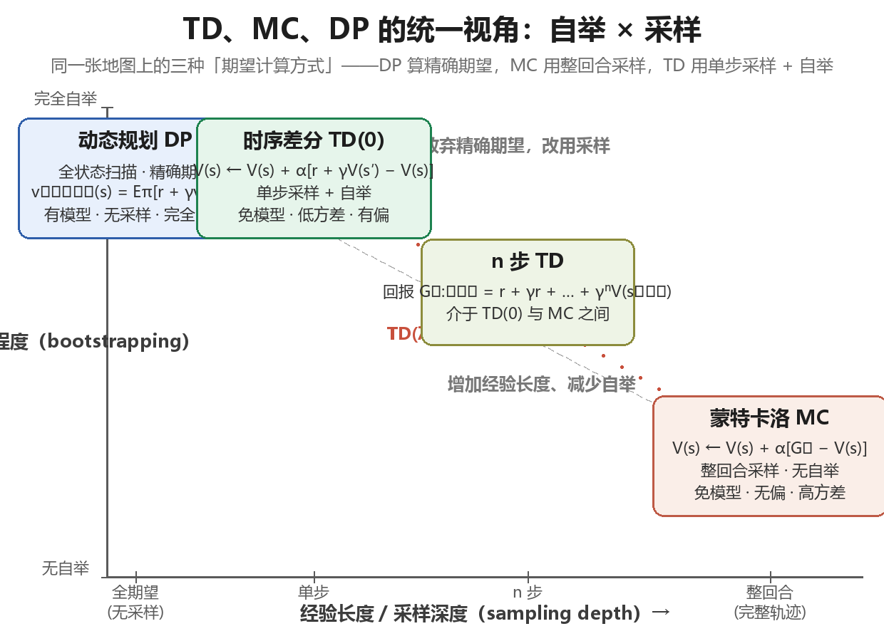

时序差分学习（Temporal Difference Learning）
时序差分学习（Temporal Difference Learning, TD）是强化学习最核心、 最具独创性的思想——Sutton 称之为"强化学习的中心思想"。它把蒙特卡洛 （Monte Carlo, MC）的采样（sampling）与动态规划（Dynamic Programming, DP）的自举（bootstrapping）合二为一：每与环境交互一步，就用"即时 奖励 + 下一步价值的估计"更新当前状态的价值，无需等待回合结束。 本章从 TD 的一步更新公式出发，依次展开：TD 与 MC 的误差分析、on-policy 的 SARSA、off-policy 的 Q-Learning、Expected SARSA 与 Double Q-Learning、 n-step TD 与 TD(λ)/资格迹（eligibility traces），最后在 Cliff Walking 上用完整实验对比 SARSA 与 Q-Learning。全文假设读者已掌握第 2 章（DP） 与第 3 章（MC）的内容；所有代码均为可运行的 Python 3 实现。
一、TD 核心思想：一步估计更新
1.1 从 MC 到 TD：为什么要"边走边学"
第 3 章的蒙特卡洛方法用完整回合的回报 \(G_t\) 来估计价值：
MC 有一个结构性短板：必须等到回合结束才能拿到 \(G_t\)，然后才能更新。 这带来三个连锁问题：
| MC 的短板 | 后果 |
|---|---|
| 只能用于回合制任务 | 无法处理"无限持续"（continuing）任务，如股票交易、过程控制 |
| 更新滞后 | 整回合经验先攒着、后处理，无法在线（online）逐步学习 |
| 整回合回报方差大 | \(G_t\) 是 \(T-t\) 个随机奖励的累加，方差随回合长度增长 |
TD 的关键洞察是：不必等完整的 \(G_t\)，走一步就够了。用"即时奖励 + 下一步价值的当前估计"作为 \(G_t\) 的替代品：
MC 视角： S_t ──► R_{t+1} ──► S_{t+1} ──► R_{t+2} ──► S_{t+2} ──► ... ──► 回合结束才更新
（需要完整轨迹，回报 G_t 方差大）
TD 视角： S_t ──► R_{t+1} ──► S_{t+1}
└──────┘ └──────┘
即时奖励 用 V(S_{t+1}) 估计未来
走一步就更新（无需回合结束）
核心思想：\(V(S_{t+1})\) 本身就是"从 \(S_{t+1}\) 出发的期望回报"的当前 估计。把它当作未来的代理，那么"\(R_{t+1} + \gamma V(S_{t+1})\)"就是一个 只需一步就能算出的回报估计——用估计去更新估计，这就是自举。
1.2 更新公式与 TD 误差
TD 的更新公式（TD(0)，即零步自举的 TD 预测）：
其中方括号内是TD 目标（TD target），被估计量本身：
方括号整体称为TD 误差（TD error），记作 \(\delta_t\)：
TD 误差刻画的是"这次一步经验，与当前价值估计之间的不一致程度"。 注意 \(\delta_t\) 与第 3 章的 MC 误差 \(G_t - V(S_t)\) 有本质区别：
| 误差类型 | 定义 | 依赖信息 | 性质 |
|---|---|---|---|
| MC 误差 | \(G_t - V(S_t)\) | 完整回合回报 | 无偏，高方差，回合结束才能算 |
| TD 误差 | \(R_{t+1} + \gamma V(S_{t+1}) - V(S_t)\) | 单步转移 + 当前估计 | 有偏，低方差，每步都能算 |
核心思想：TD 误差 \(\delta_t\) 是强化学习里最重要的标量信号之一—— 它是"预测与现实之差"，后续几乎所有算法（SARSA、Q-Learning、TD(λ)、 乃至策略梯度里的 GAE）都在以各种方式利用这个差值。
1.3 自举与采样：TD 的双重身份
为什么 TD 同时拥有 MC 与 DP 的血统？因为"计算价值更新"这件事可以拆成 两个独立的维度：
| 维度 | 两种选择 | 含义 |
|---|---|---|
| 采样（Sampling） | 采样 / 求期望 | 用单次经验近似期望（采样），还是用已知模型精确计算（期望） |
| 自举（Bootstrapping） | 自举 / 不自举 | 更新时是否使用"后继状态的当前估计"代替真实回报 |
三大方法族恰好占据这个二维空间的三个角：
不自举（用真实回报 G_t）
│
MC │
（采样+不自举） │
│
采样 ────────────────────┼──────────────────── 期望（需模型）
│
TD │ DP
（采样+自举） │ （期望+自举）
│
自举（用估计 V(S')）
- DP：期望 + 自举。已知模型，精确计算期望；用 \(v_k(S')\) 更新 \(v_{k+1}(S)\)。
- MC：采样 + 不自举。用完整回合回报，无偏但高方差。
- TD：采样 + 自举。用一步经验 + 后继状态估计，有偏但低方差。
1.4 DP / MC / TD 三方对比表
| 维度 | 动态规划 DP | 蒙特卡洛 MC | 时序差分 TD |
|---|---|---|---|
| 是否采样 | 否（对全状态求期望） | 是（完整回合采样） | 是（单步转移采样） |
| 是否自举 | 是（用 \(v_k(S')\)） | 否（用真实 \(G_t\)） | 是（用 \(V(S')\)） |
| 方差 | 无（模型精确时） | 高（随回合长度增长） | 低（只累加一步随机性） |
| 偏差 | 无（模型精确时） | 无偏 | 有偏（初始估计不准时） |
| 是否需环境模型 | 需要（已知 \(P, R\)） | 不需要 | 不需要 |
| 是否需等回合结束 | 不需要（全状态扫描） | 需要 | 不需要（单步即可） |
| 能否用于持续任务 | 能 | 不能（须有终止） | 能 |
| 典型算法 | 策略迭代、价值迭代 | 首次访问 / 每次访问 MC | SARSA、Q-Learning |
核心思想：DP、MC、TD 解的是同一个贝尔曼方程，区别只在"期望怎么算"。 TD 用"单步采样 + 自举"在方差与偏差之间取得折中，且天然支持在线学习与 持续任务——这正是它成为免模型 RL 主力的原因。
1.5 最小示例：三状态链上的逐步更新
用一个极小的确定性任务观察 TD 误差如何驱动更新。三状态链 \(A \to B \to C\)，\(C\) 为终止状态，每步奖励 \(+1\)，\(\gamma = 0.9\)， \(\alpha = 0.1\)，\(V\) 初始全 0。真值：\(v_\pi(B) = 1\)，\(v_\pi(A) = 1.9\)。
import numpy as np
# 三状态链 A→B→C（C 为终止状态），每步奖励 +1，γ = 0.9，α = 0.1
V = np.zeros(3)
alpha, gamma = 0.1, 0.9
for ep in range(1, 7):
s = 0; done = False
while not done:
s2 = s + 1
done = (s2 == 2) # C 是终止状态
r = 1.0
delta = r + gamma * (0.0 if done else V[s2]) - V[s]
V[s] += alpha * delta
s = s2
print(f"episode {ep}: V(A)={V[0]:.4f} V(B)={V[1]:.4f} (真值 1.9 / 1.0)")
# 预期输出:
# episode 1: V(A)=0.1000 V(B)=0.1000 (真值 1.9 / 1.0)
# episode 2: V(A)=0.1990 V(B)=0.1900 (真值 1.9 / 1.0)
# episode 3: V(A)=0.2962 V(B)=0.2710 (真值 1.9 / 1.0)
# episode 4: V(A)=0.3910 V(B)=0.3439 (真值 1.9 / 1.0)
# episode 5: V(A)=0.4828 V(B)=0.4095 (真值 1.9 / 1.0)
# episode 6: V(A)=0.5714 V(B)=0.4686 (真值 1.9 / 1.0)
前两个回合的 TD 误差明细（可自行验算）：
| 回合 | 步骤 | \(\delta_t = r + \gamma V(s') - V(s)\) | 更新后 |
|---|---|---|---|
| 1 | \(A \to B\) | \(1 + 0.9 \times 0 - 0 = 1.000\) | \(V(A) = 0.1\) |
| 1 | \(B \to C\) | \(1 + 0.9 \times 0 - 0 = 1.000\) | \(V(B) = 0.1\) |
| 2 | \(A \to B\) | \(1 + 0.9 \times 0.1 - 0.1 = 0.990\) | \(V(A) = 0.199\) |
| 2 | \(B \to C\) | \(1 + 0.9 \times 0 - 0.1 = 0.900\) | \(V(B) = 0.19\) |
| 3 | \(A \to B\) | \(1 + 0.9 \times 0.19 - 0.199 = 0.972\) | \(V(A) = 0.2962\) |
| 3 | \(B \to C\) | \(1 + 0.9 \times 0 - 0.19 = 0.810\) | \(V(B) = 0.271\) |
注意两点：① 每走一步、每回合结束前，价值就在更新——不需要等回合 结束；② \(V(B)\) 先于 \(V(A)\) 逼近真值，因为 \(B\) 离终止状态更近、它的 TD 目标里"真实信息"占比更高——这就是信用分配在 TD 中的自然形态： 信息从终止状态沿转移边逐步往回传导。
1.6 TD 的适用场景与局限
| 场景 | 是否适合 TD | 原因 |
|---|---|---|
| 回合制任务（棋类、导航） | 适合 | 在线更新，样本效率高于 MC |
| 持续任务（控制、交易） | TD 是少数选择 | 不依赖回合终止 |
| 非马尔可夫 / 部分可观测环境 | 不太适合 | 自举会放大观测缺失导致的偏差（见 2.4 节） |
| 与函数逼近结合（深度 RL） | 适合但需技巧 | 自举 + 函数逼近可能发散，需经验回放等（第 5 章） |
注意：本章所有 TD 算法都是表格型（tabular）的——价值存成表， 每个状态独立更新。表格型 TD 在有限状态空间下有严格的收敛保证；一旦 换成函数逼近，自举带来的"估计更新估计"就可能不稳定，这是第 5 章要 解决的核心矛盾。
二、TD 与 MC 的误差分析
2.1 偏差-方差权衡（Bias-Variance Tradeoff）
TD 与 MC 的根本分歧在于：用"有偏但低方差的单步估计"还是"无偏但高方差 的整回合回报"。两者都是 \(v_\pi(s)\) 的估计量，性质截然不同：
| 估计量 | 偏差 | 方差 | 收敛性 | 样本效率 |
|---|---|---|---|---|
| \(G_t\)（MC 回报） | 无偏：\(\mathbb{E}[G_t \mid S_t = s] = v_\pi(s)\) | 高：累加 \(T - t\) 个随机奖励 | 随回合数收敛，\(\alpha\) 需满足 Robbins-Monro 条件 | 低：每个状态只从"路过它的回合"学习 |
| \(R_{t+1} + \gamma V(S_{t+1})\)（TD 目标） | 有偏：\(V(S_{t+1})\) 是估计值，初始偏差非零 | 低：只含一步随机性 | 随回合数收敛（表格型保证） | 高：一步经验即可更新，状态间共享信息 |
方差来源的直观拆解：设奖励方差为 \(\sigma^2\)，则
MC 的方差随回合长度线性增长，TD 的方差被压到"一步"的量级——代价是 引入了由初始估计不准带来的系统性偏差。
核心思想：TD 用"一点偏差"换"大幅降方差"。当偏差（随学习迅速衰减） 小于方差（随回合长度持续增长）时，TD 在有限样本下几乎总是胜出。这个 权衡贯穿整个 RL：第 6 章的 n-step 方法、第 7 章的 TD(λ)、第 6 章的 GAE，本质上都是在手动调节偏差与方差的配比。
2.2 随机游走实验（Sutton & Barto 例 6.2 风格）
实验环境：5 个非终止状态 \(A, B, C, D, E\)，左右两端为终止状态。从任意 非终止状态等概率向左或右移动一步；到达左端奖励 \(0\)，到达右端奖励 \(+1\)， \(\gamma = 1\)（无折扣）：
左端终止 r=0 右端终止 r=+1
│ │
▼ ▼
┌────┬────┬────┬────┬────┬────┬────┐
│ 终 │ A │ B │ C │ D │ E │ 终 │
└────┴────┴────┴────┴────┴────┴────┘
等概率 ← → 随机游走
该随机游走的价值有解析解（从状态 \(s\) 出发到达右端的概率）：
| 状态 | A | B | C | D | E |
|---|---|---|---|---|---|
| 真值 \(v_\pi\) | \(1/6 \approx 0.167\) | \(2/6 \approx 0.333\) | \(3/6 = 0.500\) | \(4/6 \approx 0.667\) | \(5/6 \approx 0.833\) |
实验设置：TD(0) 取 \(\alpha = 0.1\)，MC 取 \(\alpha = 0.01\)（MC 方差大， 需要更小的步长才能收敛），各训练 100 回合，用 RMS 误差 \(\sqrt{\frac{1}{5}\sum_s (V(s) - v_\pi(s))^2}\) 衡量估计质量。
import numpy as np
class RandomWalk:
"""5 个非终止状态 A-E，两端为终止状态（左端奖励 0，右端奖励 +1）"""
def __init__(self, n=5):
self.n = n
self.s = None
def reset(self):
self.s = self.n // 2 # 从中间状态 C 出发
return self.s
def step(self, a):
ns = self.s + np.random.choice([-1, 1])
if ns < 0:
return 0, 0.0, True # 左端终止：奖励 0
if ns >= self.n:
return 0, 1.0, True # 右端终止：奖励 +1
self.s = ns
return self.s, 0.0, False
def td0_predict(env, episodes=100, alpha=0.1, gamma=1.0):
V = np.zeros(env.n)
for _ in range(episodes):
s = env.reset(); done = False
while not done:
s2, r, done = env.step(0)
V[s] += alpha * (r + gamma * (0.0 if done else V[s2]) - V[s])
s = s2
return V
def mc_predict(env, episodes=100, alpha=0.01, gamma=1.0):
V = np.zeros(env.n)
for _ in range(episodes):
traj = [] # 记录完整回合 (状态, 奖励)
s = env.reset(); done = False
while not done:
s2, r, done = env.step(0)
traj.append((s, r)); s = s2
G = 0.0 # 从回合末尾倒推回报
for s, r in reversed(traj):
G = r + gamma * G
V[s] += alpha * (G - V[s])
return V
true_v = np.array([1, 2, 3, 4, 5]) / 6.0
def rms(V): return np.sqrt(np.mean((V - true_v) ** 2))
# 单次运行：100 回合后的 V 估计
np.random.seed(42)
V_td = td0_predict(RandomWalk(), 100, 0.1)
np.random.seed(42)
V_mc = mc_predict(RandomWalk(), 100, 0.01)
print("TD(0) 100 回合后 V:", [f"{x:.3f}" for x in V_td], " RMS =", f"{rms(V_td):.4f}")
print("MC 100 回合后 V:", [f"{x:.3f}" for x in V_mc], " RMS =", f"{rms(V_mc):.4f}")
print("真实值 vπ :", [f"{x:.3f}" for x in true_v])
# 学习曲线：100 次独立运行平均 RMS 误差（每 10 回合采样一次）
def curves(seed):
rng = np.random.default_rng(seed)
Vt = np.zeros(5); Vm = np.zeros(5)
td_rms = []; mc_rms = []
for ep in range(101):
s = 2; done = False
while not done:
ns = s + rng.choice([-1, 1])
if ns < 0: r, done = 0.0, True
elif ns >= 5: r, done = 1.0, True
else: r, done = 0.0, False
Vt[s] += 0.1 * (r + (0.0 if done else Vt[ns]) - Vt[s])
s = ns
traj = []; s = 2; done = False
while not done:
ns = s + rng.choice([-1, 1])
if ns < 0: r, done = 0.0, True
elif ns >= 5: r, done = 1.0, True
else: r, done = 0.0, False
traj.append((s, r)); s = ns
G = 0.0
for s, r in reversed(traj):
G = r + G
Vm[s] += 0.01 * (G - Vm[s])
if ep % 10 == 0:
td_rms.append(rms(Vt)); mc_rms.append(rms(Vm))
return td_rms, mc_rms
td_sum = np.zeros(11); mc_sum = np.zeros(11)
for seed in range(100):
t, m = curves(seed)
td_sum += np.array(t); mc_sum += np.array(m)
print("episodes :", list(range(0, 101, 10)))
print("TD(0) RMS:", [f"{x:.3f}" for x in td_sum / 100])
print("MC RMS:", [f"{x:.3f}" for x in mc_sum / 100])
# 预期输出（节选）:
# TD(0) 100 回合后 V: ['0.128', '0.249', '0.432', '0.682', '0.826'] RMS = 0.0519
# MC 100 回合后 V: ['0.120', '0.265', '0.434', '0.572', '0.570'] RMS = 0.1339
# 真实值 vπ : ['0.167', '0.333', '0.500', '0.667', '0.833']
# episodes : [0, 10, 20, 30, 40, 50, 60, 70, 80, 90, 100]
# TD(0) RMS: ['0.535', '0.413', '0.320', '0.249', '0.186', '0.147', '0.118', '0.099', '0.083', '0.072', '0.064']
# MC RMS: ['0.546', '0.462', '0.392', '0.340', '0.298', '0.261', '0.230', '0.205', '0.187', '0.167', '0.152']
2.3 结果解读：为什么 TD 更快
把学习曲线整理成表（100 次独立运行平均的 RMS 误差）：
| 训练回合数 | 0 | 10 | 20 | 30 | 40 | 50 | 60 | 70 | 80 | 90 | 100 |
|---|---|---|---|---|---|---|---|---|---|---|---|
| TD(0) \(\alpha=0.1\) | 0.535 | 0.413 | 0.320 | 0.249 | 0.186 | 0.147 | 0.118 | 0.099 | 0.083 | 0.072 | 0.064 |
| MC \(\alpha=0.01\) | 0.546 | 0.462 | 0.392 | 0.340 | 0.298 | 0.261 | 0.230 | 0.205 | 0.187 | 0.167 | 0.152 |
两个观察：① 100 回合后 TD(0) 的 RMS（0.064）不到 MC（0.152）的一半； ② MC 的 \(\alpha\) 已经取了 TD 的十分之一，仍追不上。TD 快在哪？
- 每步都在更新：一个回合里 MC 只在结束后更新一次（且只有途经的状态 被更新），TD 则每个转移更新一次——同样 100 回合，TD 的"有效更新次数" 远多于 MC。
- 状态间共享信息（马尔可夫结构）：\(V(A)\) 的 TD 目标包含 \(V(B)\)， 而 \(V(B)\) 又包含 \(V(C)\)……一步经验带来的信息会沿转移边传导到相邻 状态。MC 则把每个状态孤立对待——\(V(A)\) 只从"恰好经过 \(A\) 的回合" 学习，信息无法共享。
- 方差小：见 2.1 节，TD 目标只含一步随机性。
核心思想：TD 的样本效率优势来自确定性等价估计（certainty- equivalence estimate）：在批处理（batch）情形下，TD(0) 收敛到的解， 等价于先根据观测到的经验构造最大似然 MDP（用观测到的转移频率和 平均奖励作为 \(P\) 与 \(R\)），再在这个经验 MDP 上精确求解贝尔曼方程 得到的值——它充分利用了数据中的马尔可夫结构。而 MC 收敛到的解，只是 对已见回报做最小二乘拟合，丢弃了状态间的转移关系。马尔可夫性质 成立时，确定性等价估计利用了更多信息，因而更准。
2.4 什么时候 MC 反而更好
| 场景 | 为什么 MC 占优 | 典型例子 |
|---|---|---|
| 环境非马尔可夫 / 部分可观测 | TD 自举依赖 \(V(S_{t+1})\) 蕴含的马尔可夫假设；观测缺失时自举会把偏差逐状态放大，MC 用真实回报不受影响 | POMDP、带噪声传感器 |
| 需要无偏估计 | TD 初始偏差需要时间消退；MC 的估计始终无偏 | 理论分析、离线评估 |
| 批处理且数据充足 | 数据多到方差不再是瓶颈时，无偏性更值钱 | 离线数据集评估 |
| 回合很短 | 回合短则 \(G_t\) 方差小，MC 的短板消失 | 一步棋局、短对话 |
注意：两者并非互斥。n-step 方法（第 6 节）在"1 步"与"整回合"之间 连续插值，TD(λ)（第 7 节）用加权平均统一两者——偏差与方差的权衡 不是二选一，而是一个连续旋钮。
三、SARSA：on-policy 时序差分控制
3.1 从预测到控制：TD 用于动作价值
第 1、2 节讨论的是预测问题（给定策略求 \(v_\pi\)）。真实任务需要 控制——找到最优策略。把 TD 思想从 \(V(s)\) 搬到动作价值 \(Q(s, a)\) 上， 就得到时序差分控制方法。其中第一个登场的是 SARSA，名字来自它的更新 需要五元组 \((S_t, A_t, R_{t+1}, S_{t+1}, A_{t+1})\)：
S → A → R → S' → A'
SARSA 的更新公式（用"下一步动作的实际价值" \(Q(S', A')\) 自举）：
关键点：\(A_{t+1}\) 是用与 \(A_t\) 相同的策略（行为策略）实际执行的动作。 也就是说，SARSA 估计的是"在当前行为策略下每个动作的价值"——这就是 on-policy（同策略）的含义。
3.2 伪代码（Sutton & Barto 算法 6.4 风格）
算法：SARSA（on-policy TD 控制）
对每个回合：
初始化 S
用 ε-greedy 从 Q 选出动作 A
对回合中的每一步：
执行 A，观测 R, S'
用 ε-greedy 从 Q 选出动作 A'（行为策略，ε 探索）
Q(S, A) ← Q(S, A) + α [ R + γ Q(S', A') − Q(S, A) ]
S ← S'; A ← A'
直到 S 为终止状态
注意伪代码里 A' 的选取与 A 完全对称——同一把 ε-greedy 既产生行为、
也参与更新目标。这是 on-policy 的签名特征。
3.3 Cliff Walking：on-policy 的经典试金石
Cliff Walking（Sutton & Barto 例 6.6）是展示 on-policy / off-policy 差异的标准环境：
| 规则项 | 定义 |
|---|---|
| 网格 | \(4 \times 12\)，共 48 个格子 |
| 起点 S | \((3, 0)\)（左下角） |
| 终点 G | \((3, 11)\)（右下角） |
| 悬崖 | \((3, 1)\) 至 \((3, 10)\) 共 10 格 |
| 动作 | 上、下、左、右（确定性转移） |
| 掉崖 | 进入悬崖格：奖励 \(-100\)，立即回到起点 S |
| 其他 | 每走一步奖励 \(-1\)；撞墙（越界）原地不动 |
| 折扣 | \(\gamma = 1\) |
列 0 1 2 3 4 5 6 7 8 9 10 11
行 0 ┌───┬───┬───┬───┬───┬───┬───┬───┬───┬───┬───┬───┐
行 1 ├───┼───┼───┼───┼───┼───┼───┼───┼───┼───┼───┼───┤
行 2 ├───┼───┼───┼───┼───┼───┼───┼───┼───┼───┼───┼───┤
行 3 └───┴───┴───┴───┴───┴───┴───┴───┴───┴───┴───┴───┘
S █ █ █ █ █ █ █ █ █ █ G
└────────────── 悬崖 █ ──────────────┘
两种典型路线：
| 路线 | 走法 | 步数 | 总奖励 |
|---|---|---|---|
| 最优路线 | 沿悬崖边（行 2）一路向右 | 13 步 | \(-13\)（最优） |
| 保守路线 | 向上绕到行 1，再向右，最后向下 | 14~16 步 | 约 \(-14 \sim -16\) |
直觉上最优路线贴着悬崖，但只要 \(\varepsilon\) 探索存在，走在悬崖边上就有 概率一步踩空掉崖（\(-100\)）。SARSA 学的是"带着探索的行为策略"的价值， 因此悬崖边的格子价值被掉崖风险压低，最终学出的策略会主动绕开悬崖。
3.4 Python 实现
import numpy as np
class CliffWalking:
"""Cliff Walking：4×12 网格。起点 (3,0)，终点 (3,11)，悬崖 (3,1)-(3,10)。
动作：0=上, 1=右, 2=下, 3=左。掉下悬崖奖励 -100 并回到起点，
其余每步奖励 -1；撞墙（越界）原地不动。"""
def __init__(self, rows=4, cols=12):
self.rows, self.cols = rows, cols
self.start = (rows - 1, 0)
self.goal = (rows - 1, cols - 1)
self.cliff = set((rows - 1, c) for c in range(1, cols - 1))
self.actions = [0, 1, 2, 3]
self.s = None
def reset(self):
self.s = self.start
return self.s
def step(self, a):
r, c = self.s
dr, dc = [(-1, 0), (0, 1), (1, 0), (0, -1)][a]
nr, nc = r + dr, c + dc
if not (0 <= nr < self.rows and 0 <= nc < self.cols):
nr, nc = r, c # 撞墙：原地不动
if (nr, nc) in self.cliff:
self.s = self.start
return self.s, -100.0, True
self.s = (nr, nc)
if self.s == self.goal:
return self.s, -1.0, True
return self.s, -1.0, False
def sarsa(env, episodes=500, alpha=0.1, gamma=1.0, eps=0.1):
Q = np.zeros((env.rows, env.cols, 4))
rewards = []
for _ in range(episodes):
s = env.reset()
a = np.random.randint(4) if np.random.random() < eps else int(np.argmax(Q[s]))
total = 0.0; done = False
while not done:
s2, r, done = env.step(a)
a2 = np.random.randint(4) if np.random.random() < eps else int(np.argmax(Q[s2]))
Q[s][a] += alpha * (r + (0.0 if done else Q[s2][a2]) - Q[s][a])
s, a = s2, a2
total += r
rewards.append(total)
return Q, rewards
def greedy_path(env, Q):
"""沿贪心策略走，返回 (路径, 步数, 是否到达终点)"""
s = env.reset(); path = [s]; done = False; steps = 0
while not done and steps < 200:
a = int(np.argmax(Q[s]))
s2, r, done = env.step(a)
s = s2; path.append(s); steps += 1
return path, steps, done
np.random.seed(1)
env = CliffWalking()
Q_s, rew_s = sarsa(env)
p, steps, ok = greedy_path(env, Q_s)
print("SARSA 后 100 回合平均奖励:", round(np.mean(rew_s[-100:]), 2))
print("SARSA 贪心路径长度:", steps, "到达终点:", ok)
print("SARSA 前 5 回合奖励:", [int(x) for x in rew_s[:5]])
# 预期输出:
# SARSA 后 100 回合平均奖励: -23.05
# SARSA 贪心路径长度: 15 到达终点: True
# SARSA 前 5 回合奖励: [-110, -101, -142, -121, -104]
训练 500 回合后，SARSA 学到的贪心路线（用训练好的 \(Q\) 表走出来的路径）：
行 0 . . . . . . . . . . . .
行 1 → → → → → → → → → → → ↓
行 2 ↑ . . . . . . . . . . ↓
行 3 ↑ █ █ █ █ █ █ █ █ █ █ G
SARSA 最终选择向上绕行两行、从行 1 横穿的保守路线（15 步），而不是 贴着悬崖的最优路线（13 步）。
3.5 为什么 on-policy 学出"保守"策略
| 问题 | 回答 |
|---|---|
| 悬崖边的格子（行 2）价值为什么低？ | 行为策略有 \(\varepsilon = 0.1\) 的探索概率，站在行 2 时可能"向下"踩进悬崖（\(-100\)）；SARSA 的更新目标 \(r + \gamma Q(S', A')\) 里 \(A'\) 也来自行为策略，因此 \(Q(\text{行 2}, \cdot)\) 被掉崖风险压低 |
| 保守路线为什么"正确"？ | 在 \(\varepsilon\) 探索持续存在的前提下，贴着悬崖走的期望回报确实低于绕行——SARSA 估计的正是这个"带探索的期望"，所以它学到的策略对探索是稳健的 |
| 换成贪心执行后呢？ | 即使训练结束后用贪心（\(\varepsilon = 0\)）执行，SARSA 学到的 \(Q\) 仍是"保守"的，路径依然绕行 |
核心思想：on-policy 方法回答的问题是"在我当前这种（带探索的） 行为方式下，每个动作值多少"。因此它学到的策略天然考虑了探索的代价。 这是优点（对探索稳健），也是局限（学到的不是真正的最优策略 \(\pi_*\)）。
四、Q-Learning：off-policy 时序差分控制
4.1 更新公式与 off-policy 思想
Q-Learning（Watkins, 1989）的更新公式只改了一处：把 \(Q(S', A')\) 换成 \(\max_{a'} Q(S', a')\)：
| SARSA | Q-Learning | |
|---|---|---|
| 更新目标里的 \(S'\) 动作 | \(A'\)：行为策略实际执行的动作 | \(\max_{a'} Q(S', a')\)：贪心目标策略的动作 |
| 行为策略与目标策略 | 相同（on-policy） | 不同（off-policy） |
Q-Learning 的更新目标完全由 \(Q\) 表自身决定（取最大），与"行为策略 实际怎么选动作"无关。这意味着：行为策略可以任意（哪怕很差），更新 仍然在朝"最优动作价值 \(q_*\)"的方向走——这就是 off-policy（异策略） 学习。
4.2 伪代码（Sutton & Barto 算法 6.5 风格）
算法：Q-Learning（off-policy TD 控制）
对每个回合：
初始化 S
对回合中的每一步：
用 ε-greedy 从 Q 选出动作 A（行为策略，只影响探索）
执行 A，观测 R, S'
Q(S, A) ← Q(S, A) + α [ R + γ max_{a'} Q(S', a') − Q(S, A) ]
S ← S'
直到 S 为终止状态
对比 3.2 节的 SARSA 伪代码：Q-Learning 在更新时不需要选出 \(A'\)， 行为策略与目标策略被显式分离——行为策略负责"去哪里收集数据"，目标 策略（贪心）负责"朝什么方向更新"。
4.3 为什么 Q-Learning 学到最优策略
- 更新目标独立于行为策略：\(R + \gamma \max_{a'} Q(S', a')\) 是贝尔曼 最优性方程 $\(q_*(s, a) = \mathbb{E}\left[ R + \gamma \max_{a'} q_*(S', a') \mid S = s, A = a \right]\)$ 的采样形式。每次更新都在把 \(Q\) 拉向 \(q_*\)，与探索策略无关。
- 收敛性保证：在表格型设定下，只要每个 \((s, a)\) 被无限次访问、 \(\alpha\) 满足 Robbins-Monro 条件（\(\sum \alpha = \infty\)，\(\sum \alpha^2 < \infty\)）， 则 \(Q \to q_*\)（Watkins & Dayan, 1992）。SARSA 只能保证收敛到 行为策略下的最优 \(q_\pi\)。
- 贪心导出：学得 \(Q \approx q_*\) 后，\(\pi(s) = \arg\max_a Q(s, a)\) 即最优策略。
核心思想：off-policy 的本质是"用任何策略收集数据，学最优策略"。 这带来两个工程红利：① 数据可以来自旧策略的回放（经验回放，第 5 章 DQN 的关键组件）；② 行为策略可以独立设计（如人工示范、安全策略）。
4.4 SARSA 与 Q-Learning 对比表
| 维度 | SARSA | Q-Learning |
|---|---|---|
| 更新目标 | \(R + \gamma Q(S', A')\)（\(A'\) 来自行为策略） | \(R + \gamma \max_{a'} Q(S', a')\)（来自贪心目标策略） |
| 探索策略 | 与目标策略相同（on-policy） | 可独立设计（off-policy），通常 ε-greedy |
| 学到的最优策略 | 行为策略下的最优（含探索代价的保守策略） | 真正的贪心最优策略 \(\pi_*\) |
| 悬崖场景行为 | 绕行安全路线，平均约 \(-24\) / 回合 | 走最优路线，但探索期常掉崖，平均约 \(-37\) / 回合 |
| 方差 / 偏差 | 目标更贴近实际行为，方差较低 | max 运算引入正偏差（最大化偏差，见 5.2 节），方差较高 |
| 收敛对象 | \(q_\pi\)（\(\pi\) 为行为策略） | \(q_*\)（与行为策略无关） |
| 典型应用 | 需对探索稳健的场景、在线学习 | DQN 家族、绝大多数现代深度 RL |
4.5 Python 实现与两条路线对比
def q_learning(env, episodes=500, alpha=0.1, gamma=1.0, eps=0.1):
"""Q-Learning：更新目标取 max，与行为策略解耦（off-policy）。
环境类 CliffWalking 与 greedy_path 见 3.4 节。"""
Q = np.zeros((env.rows, env.cols, 4))
rewards = []
for _ in range(episodes):
s = env.reset()
total = 0.0; done = False
while not done:
a = np.random.randint(4) if np.random.random() < eps else int(np.argmax(Q[s]))
s2, r, done = env.step(a)
Q[s][a] += alpha * (r + (0.0 if done else np.max(Q[s2])) - Q[s][a])
s = s2
total += r
rewards.append(total)
return Q, rewards
np.random.seed(1)
Q_q, rew_q = q_learning(env)
p2, steps2, ok2 = greedy_path(env, Q_q)
print("Q-Learning 后 100 回合平均奖励:", round(np.mean(rew_q[-100:]), 2))
print("Q-Learning 贪心路径长度:", steps2, "到达终点:", ok2)
print("Q-Learning 前 5 回合奖励:", [int(x) for x in rew_q[:5]])
# 预期输出:
# Q-Learning 后 100 回合平均奖励: -36.5
# Q-Learning 贪心路径长度: 13 到达终点: True
# Q-Learning 前 5 回合奖励: [-103, -100, -107, -101, -143]
同一随机种子下，Q-Learning 学到的贪心路线（与 3.4 节 SARSA 的路线对比）：
SARSA（保守路线，15 步） Q-Learning（最优路线，13 步）
行 0 . . . . . . . . . . . . 行 0 . . . . . . . . . . . .
行 1 → → → → → → → → → → → ↓ 行 1 . . . . . . . . . . . .
行 2 ↑ . . . . . . . . . . ↓ 行 2 → → → → → → → → → → → ↓
行 3 ↑ █ █ █ █ █ █ █ █ █ █ G 行 3 ↑ █ █ █ █ █ █ █ █ █ █ G
Q-Learning 学出了贴着悬崖的最优 13 步路线；但训练过程中（ε = 0.1） 它频繁掉崖（前 5 回合平均奖励约 \(-110\)，几乎每回合都掉），而 SARSA 在 训练后期几乎不再掉崖。"学到最优"与"过程安全"是两个不同的目标——这是 第 8 节综合实验要量化对比的核心。
4.6 on-policy 与 off-policy 的工程意义
| 维度 | on-policy（SARSA） | off-policy（Q-Learning） |
|---|---|---|
| 数据复用 | 数据必须来自当前策略，旧数据作废 | 旧策略数据可复用（经验回放的前提） |
| 样本效率 | 低（策略一变，数据就过期） | 高（可反复利用历史数据） |
| 探索安全性 | 策略自动规避探索风险 | 行为策略需单独设计安全机制 |
| 收敛目标 | 行为策略下的最优 | 全局最优 \(q_*\) |
| 现代深度 RL | PPO 等（第 6 章） | DQN 家族（第 5 章） |
五、Expected SARSA 与 Double Q-Learning
5.1 Expected SARSA：把 max 换成期望
Expected SARSA（Van Seijen et al., 2009）的更新目标是对 \(S'\) 处的 动作价值按策略 \(\pi\) 求期望，而不是取 max：
当行为策略是 ε-greedy 时，期望项可以展开为：
| 性质 | Expected SARSA | SARSA | Q-Learning |
|---|---|---|---|
| 更新目标 | 按 \(\pi\) 求期望 | \(Q(S', A')\)（单样本） | \(\max_a Q(S', a)\) |
| 目标方差 | 最低（期望消除单样本噪声） | 高（含 \(A'\) 采样噪声） | 中（max 无采样噪声但引入偏差） |
| on / off-policy | 两者皆可（\(\pi\) 取贪心即 off-policy） | on-policy | off-policy |
| 计算量 | 需遍历 \(S'\) 的所有动作 | 最小 | 最小 |
核心思想：Expected SARSA 用"确定性期望"替换 SARSA 的"随机采样"， 在不增加偏差的前提下把目标方差降到最低——同样的 \(\alpha\) 下它比 SARSA 学得更稳。代价只是每步多算一次期望（表格型下遍历 \(|A|\) 个动作）。
def expected_sarsa(env, episodes=500, alpha=0.1, gamma=1.0, eps=0.1):
"""Expected SARSA：更新目标按 ε-greedy 策略求期望，方差低于 SARSA。"""
Q = np.zeros((env.rows, env.cols, 4))
rewards = []
for _ in range(episodes):
s = env.reset(); total = 0.0; done = False
while not done:
a = np.random.randint(4) if np.random.random() < eps else int(np.argmax(Q[s]))
s2, r, done = env.step(a)
pi = np.full(4, eps / 4.0) # ε-greedy 概率分布
pi[np.argmax(Q[s2])] += 1.0 - eps
target = r + (0.0 if done else np.dot(pi, Q[s2]))
Q[s][a] += alpha * (target - Q[s][a])
s = s2; total += r
rewards.append(total)
return Q, rewards
np.random.seed(1)
Q_e, rew_e = expected_sarsa(env)
print("Expected SARSA 后 100 回合平均奖励:", round(np.mean(rew_e[-100:]), 2))
# 预期输出:
# Expected SARSA 后 100 回合平均奖励: -22.01
（环境类与 \(\alpha, \varepsilon\) 等参数同 3.4 节；与 SARSA 的 \(-23.05\) 相比，Expected SARSA 在相同设置下略优且更稳。）
5.2 最大化偏差（Maximization Bias）：max 的陷阱
Q-Learning 的 \(\max\) 运算有一个隐藏缺陷。设 \(X_1, \dots, X_n\) 是对 \(n\) 个动作价值的带噪声估计，则
只要估计有噪声，"取最大"就会系统性高估——因为噪声只会把某个动作 "顶"到最大，而不会"压"下去。这种最大化偏差（maximization bias） 在动作数多、噪声大时尤为严重，是深度 RL 中 Q 值过估计（overestimation） 的根源之一（第 5 章 Double DQN 的动机）。
一个小例子（Sutton & Barto 例 6.7 简化版）：
状态 A：两个动作
左 → 奖励 0，终止
右 → 进入状态 B（奖励 0）
状态 B：100 个动作，每个奖励 ~ N(-0.1, 1)，然后终止
真值：V*(A) = max(0, -0.1) = 0
B 的 100 个动作真值都是 \(-0.1\)，但 Q-Learning 每访问一次 B 就取一次 100 个噪声估计的 max——早期几乎必然得到一个正的最大值，于是 \(Q(A, \text{右})\) 被系统性高估，\(V(A)\) 偏离真值 0。
5.3 Double Q-Learning：两套 Q 表解耦"选择"与"评估"
Double Q-Learning（Hasselt, 2010）的思路：把"选出最大动作"与"读取 该动作的价值"交给两套独立维护的 Q 表完成。用 \(Q_A\) 选动作、用 \(Q_B\) 估值（反之亦然），使噪声无法"自肥"：
以 0.5 概率更新 \(Q_A\)，否则对称地更新 \(Q_B\)；动作选择用两表的和 （或均值）。伪代码：
算法：Double Q-Learning
对每个回合：
初始化 S
对每一步：
用 ε-greedy（基于 QA + QB）选出动作 A，执行，观测 R, S'
以 0.5 概率：
QA(S,A) ← QA(S,A) + α [ R + γ·QB(S', argmax_a QA(S',a)) − QA(S,A) ]
否则：
QB(S,A) ← QB(S,A) + α [ R + γ·QA(S', argmax_a QB(S',a)) − QB(S,A) ]
S ← S'
直到 S 为终止状态
为什么有效：\(Q_B\) 与 \(Q_A\) 由不相交的经验更新，相互独立。当 \(Q_A\) 因噪声把某个动作"顶"成最大时，\(Q_B\) 在该动作上的值仍是无偏的 估计——"选择"的噪声与"评估"的噪声互不相关，正偏差被消除。
def demo_max_bias(seeds=100, episodes=300, alpha=0.1):
"""最大化偏差演示：状态 A 两个动作——左：奖励 0 并终止；
右：进入 B。状态 B 有 100 个动作，奖励 ~ N(-0.1, 1) 后终止。
真实 V*(A) = max(0, -0.1) = 0。返回两种算法的 V(A) 学习曲线均值。"""
q_curve = np.zeros(episodes); dq_curve = np.zeros(episodes)
for seed in range(seeds):
rng = np.random.default_rng(seed)
Q = np.zeros(101) # 0-99: B 的动作；100: A 的"右"
QA = np.zeros(101); QB = np.zeros(101)
for t in range(episodes):
# --- Q-Learning ---
if rng.random() < 0.1:
a = 1 if rng.random() < 0.5 else 0
else:
a = 1 if Q[100] >= 0 else 0 # 贪心：Q[100]>=0 时选"右"
if a == 1: # 进入 B
if rng.random() < 0.1:
b = rng.integers(100)
else:
b = int(np.argmax(Q[:100]))
r = rng.normal(-0.1, 1.0)
Q[b] += alpha * (r - Q[b])
Q[100] += alpha * (np.max(Q[:100]) - Q[100])
q_curve[t] += max(0.0, Q[100])
# --- Double Q-Learning ---
if rng.random() < 0.1:
a = 1 if rng.random() < 0.5 else 0
else:
a = 1 if (QA[100] + QB[100]) / 2 >= 0 else 0
if a == 1:
if rng.random() < 0.1:
b = rng.integers(100)
else:
b = int(np.argmax(QA[:100]))
r = rng.normal(-0.1, 1.0)
if rng.random() < 0.5:
# 索引取 QA 的 argmax，值读 QB（独立估计，消除正偏差）
QA[b] += alpha * (r - QA[b])
QA[100] += alpha * (QB[int(np.argmax(QA[:100]))] - QA[100])
else:
QB[b] += alpha * (r - QB[b])
QB[100] += alpha * (QA[int(np.argmax(QB[:100]))] - QB[100])
dq_curve[t] += max(0.0, (QA[100] + QB[100]) / 2)
return q_curve / seeds, dq_curve / seeds
q_c, dq_c = demo_max_bias()
print("episode : 1 10 50 100 200 300")
print("Q-Learn :", " ".join(f"{q_c[i]:7.3f}" for i in [0, 9, 49, 99, 199, 299]))
print("DoubleQ :", " ".join(f"{dq_c[i]:7.3f}" for i in [0, 9, 49, 99, 199, 299]))
# 预期输出（100 个随机种子平均的 V(A) 估计，真值 0）:
# episode : 1 10 50 100 200 300
# Q-Learn : 0.003 0.062 0.133 0.125 0.123 0.128
# DoubleQ : 0.000 0.006 0.006 0.002 0.002 0.001
结果解读：Q-Learning 的 \(V(A)\) 被最大化偏差抬高到约 \(0.13\)（真值为 0， 相对高估 13%）；Double Q-Learning 的估计始终贴着 0 附近（约 \(0.001 \sim 0.006\)），正偏差基本被消除。代价是两套 Q 表使每个 \((s,a)\) 的更新 频率减半，前期收敛略慢。
5.4 四种表格型 TD 控制算法横向对比
| 算法 | 更新目标（\(S'\) 处） | on/off-policy | 目标方差 | 最大化偏差 | 悬崖场景表现 |
|---|---|---|---|---|---|
| SARSA | \(Q(S', A')\)（行为动作） | on | 高 | 无（不自举到 max） | 保守路线（约 \(-23\)） |
| Expected SARSA | \(\sum_a \pi(a\|S') Q(S', a)\) | 均可 | 最低 | 无（用期望） | 保守路线（约 \(-22\)） |
| Q-Learning | \(\max_a Q(S', a)\) | off | 中 | 有 | 最优路线但训练期掉崖多（约 \(-37\)） |
| Double Q-Learning | 另一表的 \(\arg\max\) 值 | off | 中 | 基本消除 | 最优路线，估值更准 |
核心思想：这四种算法构成一张"目标怎么构造"的设计空间图—— 用行为动作（SARSA）、用期望（Expected SARSA）、用贪心 max（Q-Learning）、 用解耦的 max（Double Q-Learning）。选择标准取决于：探索是否安全 （on-policy 更稳）、方差是否敏感（期望最优）、估值是否会被高估 （Double Q 最准）。
六、n-step TD：单步与整回合之间的连续谱
6.1 TD 方法家族图谱
前文所有方法（TD(0)、SARSA、Q-Learning、Expected SARSA）都属于"一步 自举"家族；MC 属于"整回合"家族。n-step TD 在两者之间连续插值—— 用 \(n\) 步真实奖励 + 第 \(n+1\) 步起用估计：

| 参数 \(n\) | \(n = 1\)（TD(0)） | 中间值（如 \(n = 3\)） | \(n \to \infty\)（MC） |
|---|---|---|---|
| 自举程度 | 完全自举（1 步） | 部分自举（\(n\) 步后） | 不自举（用完整回报） |
| 偏差 | 大（初始估计不准） | 中 | 无 |
| 方差 | 小（1 步随机性） | 中 | 大（整回合累加） |
| 需等多少步 | 1 步 | \(n\) 步 | 回合结束 |
| 典型算法 | SARSA、Q-Learning | n-step SARSA | 首次访问 MC |
核心思想：\(n\) 是一个"偏差-方差旋钮"：\(n\) 越小越像 TD（低方差、 高偏差、学习快），\(n\) 越大越像 MC（无偏、高方差、学习慢）。没有普适 最优的 \(n\)，取决于任务——这正是 TD(λ)（第 7 节）用加权平均"同时拥有 所有 \(n\)"的动机。
6.2 n-step return 定义
n-step return（截断回报）定义为前 \(n\) 步真实奖励加上第 \(n\) 步之后的 估计价值：
当 \(t + n \ge T\)（超出回合末尾）时，\(G_t^{(n)} = G_t\)（整回合回报）。 两个极端：\(G_t^{(1)} = R_{t+1} + \gamma V(S_{t+1})\) 即 TD 目标； \(G_t^{(\infty)} = G_t\) 即 MC 回报。
数值示例：设奖励序列为 \(+2, -1, +3, +5\)（回合第 4 步结束），\(\gamma = 0.9\)：
import numpy as np
r = np.array([2.0, -1.0, 3.0, 5.0]) # 从 t=0 起的奖励序列，回合在第 4 步结束
gamma = 0.9
for n in [1, 2, 3, 4]:
G = sum(gamma ** i * r[i] for i in range(n))
print(f"G(0)^({n}) = {G:.3f}")
G_inf = sum(gamma ** i * r[i] for i in range(len(r)))
print(f"G(0)^(∞) = {G_inf:.3f} （回合在第 4 步终止，与 n=4 相同）")
# 预期输出:
# G(0)^(1) = 2.000
# G(0)^(2) = 1.100
# G(0)^(3) = 3.530
# G(0)^(4) = 7.175
# G(0)^(∞) = 7.175 （回合在第 4 步终止，与 n=4 相同）
| \(n\) | \(G_0^{(n)}\) 的计算 | 数值 |
|---|---|---|
| 1 | \(+2\) | 2.000 |
| 2 | \(+2 + 0.9 \times (-1)\) | 1.100 |
| 3 | \(1.1 + 0.9^2 \times 3\) | 3.530 |
| 4 | \(3.53 + 0.9^3 \times 5\) | 7.175 |
| \(\infty\) | 回合在第 4 步结束，\(G_0^{(\infty)} = G_0^{(4)}\) | 7.175 |
同一个 \(t\) 下，不同 \(n\) 的 return 差异巨大——\(n\) 的选择直接决定更新 目标。
6.3 n-step TD 预测与 n-step SARSA
n-step TD 预测（每 \(n\) 步更新一次）：
n-step SARSA（Sutton & Barto 算法 7.4 风格）把 \(V\) 换成 \(Q\)， return 中的末项用 \(Q(S_{t+n}, A_{t+n})\)：
实现要点：维护状态/动作/奖励三个缓冲，每走一步"补发"一次对 \(n\) 步前 那个 \((S, A)\) 的更新（延迟更新机制）。
在 Cliff Walking 上运行 n-step SARSA（\(\alpha = 0.1\)，\(\varepsilon = 0.1\)， 500 回合，5 个随机种子平均的后 100 回合均值）：
| \(n\) | 1 | 3 | 5 | 10 |
|---|---|---|---|---|
| 后 100 回合平均奖励 | \(-21.5\) | \(-21.4\) | \(-23.2\) | \(-31.1\) |
解读：\(n\) 较小时（1~3）表现接近且良好；\(n = 10\) 明显变差——悬崖的 \(-100\) 惩罚需要及时传导进价值，\(n\) 太大时"掉崖信息"要在 \(n\) 步之后 才进入更新目标，学习被拖慢。n-step 的超参 \(n\) 需要根据任务的时间尺度 调节：奖励稀疏、延迟长时选大 \(n\)，奖励密集、风险即时时选小 \(n\)。
6.4 优缺点小结
| 优点 | 缺点 |
|---|---|
| 在偏差与方差之间可调，往往比 TD(0) 收敛更快 | 需要缓冲 \(n\) 步经验，实现更复杂 |
| 比 MC 支持在线学习与持续任务 | \(n\) 是额外超参，需调 |
| 比 TD(0) 对"奖励延迟"更宽容 | 奖励极端（如 \(-100\)）时大 \(n\) 传播慢 |
注意：n-step 方法在现代深度 RL 中有重要化身——第 6 章 PPO 的 GAE（广义优势估计）本质上就是"带权重的无穷 n-step 平均"，即 TD(λ) 思想在深度时代的回归（见 7.5 节）。
七、TD(λ) 与资格迹（进阶选读）
本节内容在表格型 RL 中地位极高（TD-Gammon 即用 TD(λ) 战胜人类冠军）， 但在现代深度 RL 中已较少直接使用。建议理解思想（λ-return 加权、 资格迹的"信用回溯"），不必纠结实现细节。
7.1 λ-return：n-step return 的加权平均
TD(λ) 的思路：不要选某一个 \(n\)，而是把所有的 \(G_t^{(n)}\) 加权平均。 λ-return 定义为：
权重 \((1-\lambda)\lambda^{n-1}\) 随 \(n\) 几何衰减、总和为 1。对终止于 \(T\) 的回合，最后一项（\(n = T - t\)）的权重改为 \(\lambda^{T-t-1}\)（不再乘 \(1-\lambda\)）。
| \(\lambda\) | 权重分配 | 退化为 |
|---|---|---|
| \(\lambda = 0\) | 全部权重给 \(n = 1\) | TD(0)（一步自举） |
| \(0 < \lambda < 1\) | 指数衰减地混合所有 \(n\) | 中间方法 |
| \(\lambda = 1\) | 权重全部给 \(n \to \infty\)（末项） | MC（整回合回报） |
三步步长的回合（\(T - t = 3\)）各 \(n\) 的权重示例：
| \(n\) | \(\lambda = 0\) | \(\lambda = 0.5\) | \(\lambda = 0.9\) |
|---|---|---|---|
| 1 | 1.000 | 0.500 | 0.100 |
| 2 | 0.000 | 0.250 | 0.090 |
| 3（末项） | 0.000 | 0.250 | 0.810 |
核心思想：λ-return 是"所有 n-step return 的几何加权平均"。 \(\lambda\) 与 \(n\) 一样是偏差-方差旋钮，但它同时包含所有时间尺度， 避免了"选错单一 \(n\)"的风险。理论上 \(\lambda\) 越大越无偏、方差越大。
7.2 前向视角与后向视角
前向视角（forward view）：站在时刻 \(t\)，要"看向未来"直到回合结束才能 算出 \(G_t^\lambda\)——这使 λ-return 无法在线使用，只能离线（offline）更新。
后向视角（backward view）：资格迹方法把同样的更新分散到每一步： 每走一步，把 TD 误差 \(\delta_t\) 按"资格"比例分摊给所有过去访问过的 状态。两者在离线情形下数学等价：
前向视角（离线）： 后向视角（在线）：
t 时刻需要整个未来 每步只用一个 δ_t，回放给过去
S_t ──► ... ──► 回合结束 e(s) 记录"s 被多久前访问过"
G_t^λ 算出来后才更新 V(S_t) V(s) ← V(s) + α·δ_t·e(s) 对所有 s
| 视角 | 何时能更新 | 需要的信息 | 适用 |
|---|---|---|---|
| 前向（λ-return） | 回合结束后 | 完整未来轨迹 | 离线 / 批处理 |
| 后向（资格迹） | 每步 | 资格迹表 \(e\) | 在线学习（TD(λ) 实际实现） |
7.3 资格迹（Eligibility Traces）与 TD(λ) 更新
资格迹 \(e_t(s)\) 记录"状态 \(s\) 最近被访问得多频繁"——它是"信用"的 载体：越久远的状态，越不该为当前的 TD 误差负责。累积迹（accumulating trace）的更新：
即：每步先把所有迹衰减 \(\gamma\lambda\) 倍，再把当前访问的状态的迹加 1。 于是 TD(λ) 的更新是对所有状态同时进行的：
资格迹的演变（状态访问序列 A → A → B → C）：
时刻 A B C
0 访问 A: e(A)=1
1 访问 A: e(A)=1+γλ （再次访问，迹叠加）
2 访问 B: e(A)=γλ, e(B)=1
3 访问 C: e(A)=(γλ)², e(B)=γλ, e(C)=1
└──────────┬──────────┘
δ_3 按迹的强度分摊给 A、B、C：离得越近，分得越多
| 迹的类型 | 更新规则 | 特点 |
|---|---|---|
| 累积迹（accumulating） | \(e(s) \leftarrow \gamma\lambda\, e(s) + 1\) | 反复访问同一状态会叠加；长回合中可能过大 |
| 替换迹（replacing） | 访问时 \(e(s) \leftarrow 1\)（先置 1 再衰减） | 防止叠加爆炸，常更稳健 |
在随机游走上实现 TD(λ)（\(\gamma = 1\)，100 回合）：
import numpy as np
def td_lambda(env, episodes=100, alpha=0.1, lam=0.5, gamma=1.0):
"""TD(λ)：资格迹后向视角。env 与 rms 复用 2.2 节的 RandomWalk。"""
V = np.zeros(env.n)
for _ in range(episodes):
e = np.zeros(env.n) # 资格迹，每回合重置
s = env.reset(); done = False
while not done:
s2, r, done = env.step(0)
delta = r + gamma * (0.0 if done else V[s2]) - V[s]
e[s] += 1.0 # 访问状态：迹 +1（累积迹）
V += alpha * delta * e # 所有状态按迹的强度分摊更新
e *= gamma * lam # 迹随时间衰减
s = s2
return V
for lam, alpha in [(0.0, 0.1), (0.5, 0.05), (0.9, 0.02)]:
acc = 0.0
for seed in range(100):
np.random.seed(seed)
acc += rms(td_lambda(RandomWalk(), 100, alpha, lam))
print(f"λ={lam:.1f}, α={alpha:.2f}: 100 次运行平均 RMS = {acc/100:.4f}")
# 预期输出（随机游走，100 回合，各 λ 取较优 α）:
# λ=0.0, α=0.10: 100 次运行平均 RMS = 0.0602
# λ=0.5, α=0.05: 100 次运行平均 RMS = 0.0632
# λ=0.9, α=0.02: 100 次运行平均 RMS = 0.0830
（注意代码里 \(\lambda\) 越大配的 \(\alpha\) 越小——大 \(\lambda\) 等价于长 return，方差大，需要更小的步长。\(\lambda\) 与 \(\alpha\) 必须联合调参。）
7.4 λ 与 α 的联合调参表
随机游走 100 回合、100 次运行平均 RMS 误差（\(\lambda \times \alpha\) 网格， 固定 \(\alpha\) 时 \(\lambda\) 越大越差；\(\lambda\) 大必须配小 \(\alpha\)）：
| \(\lambda \backslash \alpha\) | 0.10 | 0.05 | 0.02 | 0.01 |
|---|---|---|---|---|
| 0.00 | 0.0616 | 0.1490 | 0.3261 | 0.4239 |
| 0.30 | 0.0581 | 0.0971 | 0.2726 | 0.3869 |
| 0.50 | 0.0643 | 0.0656 | 0.2225 | 0.3493 |
| 0.70 | 0.0777 | 0.0551 | 0.1555 | 0.2918 |
| 0.90 | 0.1148 | 0.0778 | 0.0844 | 0.1988 |
| 0.99 | 0.1691 | 0.1124 | 0.0825 | 0.1520 |
两个结论：① 对角线上（\(\lambda\) 大配 \(\alpha\) 小）各 \(\lambda\) 表现接近， 最优约在 \(\lambda \approx 0.3 \sim 0.7\)；② 固定 \(\alpha\) 时，\(\lambda\) 从 0 增大会显著变差——因为大 \(\lambda\) 的 return 方差大。调参时应 "\(\lambda\) 与 \(\alpha\) 反着调"。
7.5 为什么现代深度 RL 很少直接用 TD(λ)
| TD(λ) 的假设 | 深度 RL 的现实 | 冲突 |
|---|---|---|
| 状态可枚举，才能维护逐状态迹 \(e(s)\) | 状态是高维连续向量（像素、传感器） | 迹表无法存储 |
| 表格更新 \(V(s)\) | 用神经网络参数化 \(V_\theta(s)\) | 迹无法"按状态"回溯到参数 |
| 单条轨迹在线更新 | 需要经验回放（打破相关性） | 迹与回放不兼容 |
| 无函数逼近的稳定性问题 | 自举 + 函数逼近可能发散 | 需额外技巧（第 5 章） |
核心思想：TD(λ) 的思想没有过时——它被深度化改造为 GAE（Generalized Advantage Estimation, 第 6 章）：GAE 用 \(\lambda\) 加权平均多步 TD 误差来估计优势函数，公式 \(\hat{A}_t = \sum_{l=0}^{\infty}(\gamma\lambda)^l \delta_{t+l}\) 正是"λ-return 的优势版本"。PPO 等现代算法的 \(\lambda\) 超参 （通常 0.95）就源自这里。
7.6 TD(λ) 优缺点表
| 优点 | 缺点 |
|---|---|
| 统一 TD(0) 与 MC，消除"选 \(n\)"的尴尬 | 表格型才能维护迹；高维状态不可行 |
| 后向视角支持在线更新（前向不行） | \(\lambda\) 与 \(\alpha\) 强耦合，调参成本高 |
| 收敛速度通常优于固定 \(n\) 的方法 | 累积迹在长回合中可能数值过大 |
| 理论优雅：前向/后向等价 | 深度时代被 GAE 取代 |
八、综合实验：Cliff Walking 上 SARSA vs Q-Learning
8.1 实验设置
| 参数 | 取值 |
|---|---|
| 环境 | Cliff Walking（3.4 节实现，\(4 \times 12\)） |
| 算法 | SARSA（on-policy）vs Q-Learning（off-policy） |
| 学习率 \(\alpha\) | 0.1 |
| 折扣 \(\gamma\) | 1.0 |
| 探索率 \(\varepsilon\) | 0.1（ε-greedy，固定不衰减） |
| 训练回合数 | 500 |
| 随机种子 | 5 个（0~4），结果取平均 |
| 评估指标 | 每回合奖励和、贪心路径长度、掉崖次数 |
8.2 训练循环与统计
import numpy as np
# 复用 3.4 节的环境类 CliffWalking、sarsa，以及 4.5 节的 q_learning
def run_experiment(algo_fn, env, episodes=500, seeds=5):
"""运行 seeds 个随机种子，返回分桶均值与全部奖励序列。"""
buckets = np.zeros(5); all_rewards = []
for seed in range(seeds):
np.random.seed(seed)
_, rew = algo_fn(env, episodes)
all_rewards.append(rew)
for b in range(5):
buckets[b] += np.mean(rew[b * 100:(b + 1) * 100])
return buckets / seeds, all_rewards
env = CliffWalking()
for name, fn in [("SARSA", sarsa), ("Q-Learning", q_learning)]:
buckets, all_r = run_experiment(fn, env)
print(f"{name:10s} 分桶均值: {[f'{x:.1f}' for x in buckets]}")
print(f"{'':10s} 全程平均: {np.mean(all_r):.1f}")
np.random.seed(1)
Q_s2, rew_s2 = sarsa(env); Q_q2, rew_q2 = q_learning(env)
p_s, st_s, _ = greedy_path(env, Q_s2)
p_q, st_q, _ = greedy_path(env, Q_q2)
print(f"SARSA 贪心路径: {st_s} 步")
print(f"Q-Learning 贪心路径: {st_q} 步")
falls_s = [sum(1 for r in rew_s2[b*100:(b+1)*100] if r < -50) for b in range(5)]
falls_q = [sum(1 for r in rew_q2[b*100:(b+1)*100] if r < -50) for b in range(5)]
print("SARSA 掉崖次数(每100回合):", falls_s)
print("Q-Learning 掉崖次数(每100回合):", falls_q)
# 预期输出（5 个随机种子平均；掉崖次数为 seed=1 单次运行）:
# SARSA 分桶均值: ['-108.7', '-52.2', '-34.5', '-26.2', '-24.3']
# 全程平均: -49.2
# Q-Learning 分桶均值: ['-111.0', '-57.7', '-41.6', '-35.6', '-37.0']
# 全程平均: -56.6
# SARSA 贪心路径: 15 步
# Q-Learning 贪心路径: 13 步
# SARSA 掉崖次数(每100回合): [89, 33, 12, 7, 6]
# Q-Learning 掉崖次数(每100回合): [88, 38, 21, 23, 21]
8.3 学习曲线与最终对比
学习曲线（每 100 回合的平均每回合奖励，5 个随机种子平均；条形长度 ∝ 奖励高低，满格对应奖励 0）：
回合区间 0-99 100-199 200-299 300-399 400-499
SARSA ████ ███████████████████████ █████████████████████████████ ███████████████████████████████ ████████████████████████████████
-108.7 -52.2 -34.5 -26.2 -24.3
Q-Learning ███ █████████████████████ ██████████████████████████ ████████████████████████████ ████████████████████████████
-111.0 -57.7 -41.6 -35.6 -37.0
两条曲线的完整学习过程（图见下）：

| 指标 | SARSA | Q-Learning | 差异 |
|---|---|---|---|
| 前 100 回合平均奖励 | \(-108.7\) | \(-111.0\) | 几乎相同（都在密集掉崖探索） |
| 后 100 回合平均奖励 | \(-24.3\) | \(-37.0\) | SARSA 高约 34% |
| 全程平均 | \(-49.2\) | \(-56.6\) | SARSA 略优 |
| 贪心路径长度 | 15 步（保守） | 13 步（最优） | Q-Learning 学到更优策略 |
| 训练后期掉崖次数（400-499 回合） | 6 次 | 21 次 | SARSA 掉崖少 3.5 倍 |
8.4 结果分析：没有免费午餐
- Q-Learning 学到了更好的策略，但过程更危险：它的贪心路径是贴崖的 最优 13 步；但训练全程 \(\varepsilon = 0.1\) 的探索使它后期仍频繁掉崖 （400-499 回合掉 21 次），把平均奖励拖到 \(-37.0\)。
- SARSA 用"次优策略"换"过程安全"：它学出绕行 15 步的保守路线， 后期掉崖仅 6 次，平均奖励 \(-24.3\) 反而更高——在探索持续存在的 前提下，保守策略的期望回报确实更高。
- 两者的差距来自对探索的不同态度：
| 问题 | SARSA 的答案 | Q-Learning 的答案 |
|---|---|---|
| "带着 ε 探索，怎么走最好？" | 绕开悬崖（稳健） | （不回答这个问题） |
| "如果 ε → 0，怎么走最好？" | 仍是保守路线 | 贴崖最优路线 |
| 适合的场景 | 训练期就部署 / 风险敏感 | 先离线训练、后部署 / 追求极致最优 |
核心思想：on-policy 与 off-policy 没有绝对优劣——Q-Learning 的 目标函数是"最终学到的策略有多好"，SARSA 的目标函数是"训练过程有多 安全高效"。工程上常见组合：用 Q-Learning（或 DQN）离线训练到收敛， 部署时再关掉探索；或训练中动态衰减 \(\varepsilon\)，让 SARSA 的保守性 逐步让位给最优性。
8.5 动手练习
- 衰减探索率：把 \(\varepsilon\) 从固定 0.1 改为线性衰减到 0（500 回合）。 重新运行对比实验，观察 SARSA 与 Q-Learning 的后 100 回合差距如何变化 （提示：探索消失后，Q-Learning 的掉崖惩罚大幅下降，可能反超 SARSA）。
- 修改 \(\alpha\)：分别用 \(\alpha = 0.01, 0.05, 0.2\) 重跑，绘制两种算法 的后 100 回合平均奖励随 \(\alpha\) 的变化曲线，找出各自的最优 \(\alpha\)。
- 实现 Expected SARSA：把 Q-Learning 的 max 换成 ε-greedy 期望 （5.1 节公式），在相同设置下对比三者。验证 Expected SARSA 的方差 是否确实最低（比较 5 个种子间的波动）。
- 实现 n-step SARSA：在 6.3 节基础上实现 \(n \in \{1, 3, 5, 10\}\)， 验证 \(n = 10\) 在悬崖环境上变差的现象，并解释原因。
- Double Q-Learning 上悬崖：把 5.3 节的 Double Q-Learning 应用到 Cliff Walking，对比它与 Q-Learning 的贪心路径与估值（可检查学到的 \(Q\) 值是否明显低于 Q-Learning 的高估值）。
附：本章速查表
| 概念 | 一句话定义 | 关键公式 |
|---|---|---|
| TD 目标 | 一步奖励 + 后继状态估计 | \(R_{t+1} + \gamma V(S_{t+1})\) |
| TD 误差 | 目标与当前估计之差 | \(\delta_t = R_{t+1} + \gamma V(S_{t+1}) - V(S_t)\) |
| TD(0) 预测 | 单步自举更新 | \(V(S_t) \leftarrow V(S_t) + \alpha\delta_t\) |
| SARSA | on-policy，用行为动作自举 | \(Q(S,A) \leftarrow Q(S,A) + \alpha[R + \gamma Q(S',A') - Q(S,A)]\) |
| Q-Learning | off-policy，用贪心 max 自举 | \(Q(S,A) \leftarrow Q(S,A) + \alpha[R + \gamma \max_{a'} Q(S',a') - Q(S,A)]\) |
| Expected SARSA | 目标取期望，方差最低 | \(Q(S,A) \leftarrow Q(S,A) + \alpha[R + \gamma \sum_a \pi(a\|S')Q(S',a) - Q(S,A)]\) |
| Double Q-Learning | 两表解耦选择与评估，消除最大化偏差 | \(Q_A \leftarrow Q_A + \alpha[R + \gamma Q_B(S', \arg\max_a Q_A(S',a)) - Q_A]\) |
| n-step return | \(n\) 步奖励 + 截断估计 | \(G_t^{(n)} = \sum_{i=1}^{n}\gamma^{i-1}R_{t+i} + \gamma^n V(S_{t+n})\) |
| λ-return | 所有 n-step return 加权平均 | \(G_t^\lambda = (1-\lambda)\sum_n \lambda^{n-1} G_t^{(n)}\) |
| 资格迹 | 状态的"信用"强度 | \(e_t(s) = \gamma\lambda\, e_{t-1}(s) + \mathbf{1}\{S_t = s\}\) |
| TD(λ) 更新 | 用迹把 \(\delta_t\) 分摊给所有状态 | \(V(s) \leftarrow V(s) + \alpha\,\delta_t\, e_t(s)\) |
| 偏差-方差权衡 | TD 有偏低方差，MC 无偏高方差 | \(n\)（或 \(\lambda\)）是调节旋钮 |
| 最大化偏差 | \(\mathbb{E}[\max X] \ge \max \mathbb{E}[X]\) | Double Q-Learning 消除 |
下一步：本章的所有算法都是表格型的——价值存成表，每个状态 独立更新。一旦状态空间变大（图像、连续状态），表格就会爆炸，必须用 函数逼近把"查表"换成"拟合"。下一章 值函数逼近与 DQN 将进入深度强化学习：用神经网络逼近 \(Q\) 函数，并解决自举 + 函数逼近 带来的不稳定问题（经验回放、目标网络），其中 Double DQN 正是本章 最大化偏差思想的直接继承。
十、理论进阶：TD 误差与收敛性
本节回答"算法为什么成立"：TD 误差的消去律与不动点、随机逼近下的收敛 定理、偏差-方差权衡的量化。记号沿用前文：\(T_\pi\) 为 Bellman 期望算子， \(\lVert\cdot\rVert_\infty\) 为最大范数。
10.1 TD 误差的条件期望与消去律
定理（消去律）：\(V = v_\pi\) 时 \(\mathbb{E}[\delta_t \mid S_t = s] = 0\)。 证明只用 Bellman 期望方程：
推广：对任意 \(V\)，定义 \((T_\pi V)(s) = \mathbb{E}[R_{t+1} + \gamma V(S_{t+1}) \mid S_t=s]\)，则
不动点：\(T_\pi\) 是最大范数下的 \(\gamma\)-收缩算子（\(\lVert T_\pi V - T_\pi U\rVert_\infty \le \gamma\lVert V-U\rVert_\infty\)），由 Banach 不动点定理有唯一不动点 \(v_\pi\)；期望更新 \(V \leftarrow V + \alpha(T_\pi V - V)\) 每步把 \(\lVert V-v_\pi\rVert_\infty\) 缩小约 \(1-\alpha(1-\gamma)\) 倍——残差即学习方向，残差为零处更新停止。
数值验证（3 状态随机 MDP，均匀转移、奖励 \([0,1,-1]\)、\(\gamma=0.9\)；解出 \(v_\pi\) 后采样 20 万条一步转移估计条件期望）：
import numpy as np
n = 3
P = np.full((n, n), 1.0 / n)
r = np.array([0.0, 1.0, -1.0])
gamma = 0.9
v_pi = np.linalg.solve(np.eye(n) - gamma * P, r) # Bellman 方程
rng = np.random.default_rng(0)
acc = np.zeros(n); cnt = np.zeros(n)
for _ in range(200000):
s = rng.integers(0, n)
s2 = rng.integers(0, n) # 一步转移
delta = r[s] + gamma * v_pi[s2] - v_pi[s]
acc[s] += delta; cnt[s] += 1
print("E[delta|s] 估计:", np.round(acc / cnt, 4))
print("Bellman 残差 :", np.round(r + gamma * P @ v_pi - v_pi, 4))
# 预期输出（噪声 ~1e-3）:
# E[delta|s] 估计: [-0.001 0.0041 0.0012]
# Bellman 残差 : [0. 0. 0.]
小结：\(\mathbb{E}[\delta_t \mid S_t=s] = (T_\pi V)(s) - V(s)\) 同时给出消去律（真值处误差期望为 0）、学习方向（残差）与唯一不动点 \(v_\pi\)。
10.2 随机逼近与表格型 TD(0) 收敛
Robbins-Monro 框架：迭代 \(x_{k+1} = x_k + \alpha_k(f(x_k) + \xi_k)\)，\(f\) 收缩且有唯一根 \(x^*\)，\(\xi_k\) 零均值噪声。若步长满足
则 \(x_k \to x^*\) 以概率 1：前者保证能"走到"根，后者保证噪声被平均掉（典型 \(\alpha_k = 1/k\)）。
TD(0) 是随机逼近特例：代入 10.1 结论，
收敛定理（证明思路）：(1) 收缩——\(T_\pi\) 是 \(\gamma\)-收缩，唯一不动点 \(v_\pi\)；(2) 期望更新——\(V \leftarrow V + \alpha(T_\pi V - V)\) 使 \(\lVert V-v_\pi\rVert_\infty\) 单调收缩；(3) 噪声消去——RM 条件下噪声累积是零均值有限方差鞅，以概率 1 趋于 0（鞅收敛）。三步合起来：满足 RM 步长条件的表格型 TD(0) 以概率 1 收敛到 \(v_\pi\)。关键前提是噪声零均值（消去律）——目标含系统性偏差时收敛目标即偏离 \(v_\pi\)。
与 MC 对比：MC 更新同样在 RM 框架内：\(G_t\) 是 \(v_\pi(S_t)\) 的无偏观测，本质是分状态样本均值，同条件下也以概率 1 收敛。差别只在观测——MC 方差随回合长度增长，TD 方差小但有偏，取舍即下节权衡。
小结：TD 与 MC 收敛都归约到 Robbins-Monro 定理，区别只在"观测是什么"；RM 条件 \(\sum\alpha=\infty,\ \sum\alpha^2<\infty\) 是共同步长合同。
10.3 偏差-方差权衡的量化
恒等式 \(\mathbb{E}[(X-c)^2] = \operatorname{Var}(X) + (\mathbb{E}[X]-c)^2\)。取 \(X=G_t^{(n)}\)、\(c=v_\pi(S_t)\)： - 偏差项来自自举：\(G_t^{(n)}\) 末尾 \(\gamma^n V(S_{t+n})\) 是估计值，\(n\to\infty\) 时偏差 \(\to 0\)； - 方差项来自采样：\(n\) 步随机量累加，\(n\to\infty\) 时趋于整轨迹回报方差（伯努利情形极限 \(v_\pi(s)(1-v_\pi(s))\)）。
故 \(n=1\) 纯 TD（偏差最大、方差最小）、\(n=\infty\) 纯 MC（零偏差、方差最大），中间存在最优 \(n^*\)。λ-return 同理（\(G_t^\lambda\) 是 n-step return 的凸组合）：
偏差项随 \(\lambda\) 增大而减小，方差项随 \(\lambda\) 增大而增大。
误差²
│ ╱╲ ← MSE = 偏差² + 方差（先降后升）
│ ╱ ╲
│ ╱ ╲____ 方差（随 n 增大，趋于 MC 极限）
│ ╱‾‾‾‾‾‾‾
│ ╱ ← 偏差²（随 n 增大而减小）
│╱
└──────────────────────────────► n
n=1(纯TD) n* n=∞(纯MC)
数值演示（随机游走：状态 0..5、0/5 吸收、到 5 得 \(+1\)、\(\gamma=1\)、\(v(s)=s/5\)；把 \(V(3)\) 调偏为 1.5（真值 0.6）作偏差源，从状态 2 出发采样 2 万轨迹）：
import numpy as np
gamma = 1.0
v_true = np.arange(6) / 5.0
V_hat = v_true.copy(); V_hat[3] = 1.5 # 偏差源：状态 3 高估
rng = np.random.default_rng(0)
trajs = []
for _ in range(20000):
s, done, traj = 2, False, []
while not done and len(traj) < 30:
s += rng.choice([-1, 1])
done = s in (0, 5)
traj.append(s)
trajs.append(traj)
print("n 偏差^2 方差 MSE")
for n in [1, 3, 5, 7, 10, 30]:
G = []
for traj in trajs:
if len(traj) < n: # 已终止：真实终止奖励
g = 1.0 if traj[-1] == 5 else 0.0
else: # 未终止：自举截断
g = gamma**n * V_hat[traj[n-1]]
G.append(g)
G = np.array(G)
bias2 = (G.mean() - v_true[2])**2
var = G.var()
print(f"{n:2d} {bias2:.5f} {var:.5f} {bias2+var:.5f}")
# 预期输出:
# n= 1 0.20092 0.42250 0.62342
# n= 3 0.11405 0.43599 0.55005
# n= 5 0.05254 0.40060 0.45314
# n= 7 0.02119 0.35455 0.37574
# n=10 0.00001 0.20986 0.20987
# n=30 0.00000 0.23966 0.23966
（\(n\) 偶数时未吸收轨迹到不了状态 3（奇偶性），故 \(n=10\) 偏差恰为 0；方差趋于 MC 极限 0.24。本例 \(n^*\approx10\)：MSE 在纯 TD 的 0.62（偏差主导）与纯 MC 的 0.24（方差主导）之间取最小。）
小结：MSE = 偏差² + 方差；\(n\)（或 \(\lambda\)）从 1 到 \(\infty\) 单调地把偏差换成方差，最优在交点附近。
10.4 TD(λ) 的理论：资格迹与等价性
泛化递推：\(z_t = \gamma\lambda\, z_{t-1} + \nabla V(S_t)\)；表格型下 \(\nabla V(S_t)\) 的分量即 \(\mathbf{1}\{S_t=s\}\)，回到 7.3 节累积迹；梯度形式为函数逼近 TD(λ) 预留接口。
资格迹传播（访问序列 S_0→S_1→S_2→S_3，γλ=0.5）：
时刻 S_0 S_1 S_2 S_3
t=0 z=1 0 0 0
t=1 0.5 z=1 0 0
t=2 0.25 0.5 z=1 0
t=3 0.125 0.25 0.5 z=1
│
t=3 的 δ_3 按迹回放：S_3 得 1 份，S_0 只得 0.125 份
核心恒等式（TD(λ) 理论的心脏）：
证明思路（telescoping）：展开每个 \(\delta_k\)，所有 \(V\) 项两两相消，剩余按"回报出现位置"重新分组即得 λ-return 定义。恒等式解释三件事：(1) λ-return 是未来 TD 误差的几何加权和——TD 误差是原语；(2) 资格迹必须按 \(\gamma\lambda\) 衰减，后向更新 \(\sum_t\delta_t z_t\) 才等于前向 \(\sum_t(G_t^\lambda - V(S_t))\)；(3) 前向-后向等价：\(\sum_t\delta_t z_t\) 交换求和次序后，状态 \(S_k\) 收到的总系数恰为 \(\sum_{t\ge k}(\gamma\lambda)^{t-k}\delta_t = G_k^\lambda - V(S_k)\)，与离线 λ-return 更新逐状态相等。
小结：递推 \(z_t = \gamma\lambda z_{t-1} + \nabla V(S_t)\) 与恒等式 \(G_t^\lambda - V(S_t) = \sum_{k\ge t}(\gamma\lambda)^{k-t}\delta_k\) 构成 TD(λ) 全部理论：前者是在线实现，后者是与 λ-return 的等价性，共享衰减因子 \(\gamma\lambda\)。
10.5 Q-Learning 的收敛条件
随机逼近形式：
Bellman 最优算子 \((HQ)(s,a) = \mathbb{E}[R_{t+1} + \gamma\max_{a'}Q(S_{t+1},a') \mid S_t=s, A_t=a]\) 同样是 \(\gamma\)-收缩，唯一不动点 \(Q^*\)。
收敛定理（Watkins & Dayan 1992，表格型）：若 (1) 步长满足 RM 条件（对每个 (s,a) 分别累计）；(2) 行为策略保证所有 (s,a) 被无限频繁访问（GLIE：如 \(\varepsilon\)-greedy 且 \(\varepsilon_t\to0\)、\(\sum_t\varepsilon_t=\infty\)），则 \(Q_t \to Q^*\) 以概率 1。
为何 off-policy 也能收敛：更新目标中的 \(\max\) 与行为策略无关——它问"哪个动作最好"，不问"行为策略走哪个"。行为策略只决定哪些 (s,a) 被采样（访问频率），不决定更新指向哪个不动点；GLIE 保证各分量无限频繁更新后收敛到同一 \(Q^*\)。对照 SARSA：目标 \(R+\gamma Q(S',A')\) 中 \(A'\sim\pi\)，期望方向是 \(T_\pi Q - Q\)，收敛到 \(Q^\pi\)——策略一换必须重学；Q-Learning 的 max 目标绕开行为策略，代价是最大化偏差（第五节 Double Q-Learning 的动机）。
小结：Q-Learning 收敛 = \(H\) 的 \(\gamma\)-收缩 + 消去律（残差 \(HQ-Q\) 的无偏采样）+ GLIE；max 算子把更新方向与行为策略解耦，故 off-policy 亦收敛。
10.6 理论小结：TD 与 MC 收敛对比总表
| 维度 | 蒙特卡洛 MC | 表格型 TD(0) | n-step / TD(λ) |
|---|---|---|---|
| 随机观测 | \(G_t\)（整条轨迹） | \(R_{t+1}+\gamma V(S_{t+1})\)（一步） | \(G_t^{(n)}\) / \(G_t^\lambda\) |
| 观测期望 | \(v_\pi(S_t)\)（无偏） | \((T_\pi V)(S_t)\)（有偏，含自举） | 介于两者之间 |
| 噪声方差 | 大，随回合长度增长 | 小（单步随机量） | 随 \(n\) / \(\lambda\) 递增 |
| 偏差 | 0 | 非零（\(V\ne v_\pi\) 时） | 随 \(n\) / \(\lambda\) 递减 |
| 收敛机制 | 样本均值（RM） | 收缩算子 \(T_\pi\) + RM | 同 TD(0)，偏差-方差可调 |
| 步长条件 | \(\sum\alpha=\infty,\ \sum\alpha^2<\infty\) | 同左 | 同左 |
| 收敛目标 | \(v_\pi\) / \(Q^\pi\)（SARSA） | \(v_\pi\) / \(Q^*\)（Q-Learning） | 同左 |
核心思想：全部收敛性由三条性质拼成——收缩（\(T_\pi\) / \(H\) 是 \(\gamma\)-收缩，唯一不动点即真值）、消去律（TD 误差条件期望等于 Bellman 残差，真值处为 0）、噪声消去（RM 步长把零均值噪声平均掉）。 \(n\) 与 \(\lambda\) 只调节偏差-方差配比；Q-Learning 用 max 算子把不动点 固定为 \(Q^*\)。上述结论仅限表格型——引入函数逼近后"收缩 + 零均值 噪声"论证失效（自举、函数逼近与 off-policy 构成不稳定三要素 deadly triad），下一章的经验回放与目标网络正是为此设计。